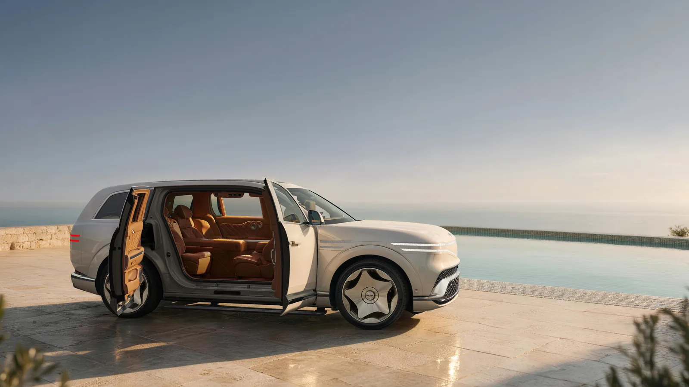

Genesis · 上市 · 韓國2026-11-10
Genesis GV90 韓國開賣：月亮壺車身與無 B 柱對開門 Neolun
Genesis commences sales of GV90 Neolun and GV90 in Korea
Genesis 11 月 10 日在韓國開放旗艦電動 SUV GV90 與 GV90 Neolun 接單。標準版用一般車門，Neolun 配備官方稱全球首見、可各自開關的隱藏 B 柱對開門「Neolun Arch Gate」。車長 5,285mm、軸距 3,245mm。
設計解析 Design Notes
- 造型外觀靈感來自韓國傳統月亮壺（moon jar），以克制的量體表現氣勢；車尾用柔和的弧面呼應壺身。
- 燈號Wing Face 微透鏡陣列（MLA）頭燈與車身線條融為一體，配雙層立體 G-matrix 鍍鉻水箱護罩。
- 車門Neolun 前後門相對同時向外打開；車門內藏雙鋼梁、車架加厚 1.5 倍，取代 B 柱的結構。
- CMF16 種外觀色（13 亮面、3 霧面，如 Seychelles Beige、Baena Green）；飾板可選實木、天然石材與羊毛喀什米爾。
- 室內 UX彈出式 OLED 螢幕行駛時 23.6 吋、停車時展開成 24.6 吋；Neolun 前座可電動旋轉 180 度。